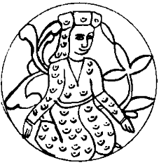

Eskice bir apartmanın beş katına birden yayılmış şirketin önüne geldiğinde her zaman yaptığı gibi gururla “Uno-mastik” levhasına baktı. Günlerden pazar olduğu için kapıyı anahtarı ile açtı. Her önüne gelen kullanmasın düşüncesiyle kilitli tutulan tarihi asansörün tel örgülü kapısını da yine anahtarıyla açarak beşinci kattaki ofisine çıktı. Sekreterinin boş masasını hızla geçerek kendi odasına girdi. Kahverengi taklit güderiyle kaplanmış, yumuşak ama yarı yarıya erimiş koltuğuna oturdu. Oda dehşetli sıcaktı. Kalktı, havalandırmayı çalıştırdı. Sonra kısa günün kârı mı zararı mı olduğu pek belli olmayan taşı cebinden çıkardı. Amstrad marka bilgisayarının köşeli klavyesini ve iri yazıcısını biraz öteye itti, yine taklit bir deriyle kaplanarak marköterili hale getirilmiş masasının üstünde yer açtı. Taşı koydu.
Aptalca bir taş. Üzerinde ne bir yazı ne bir işaret... Uzunca bir süre ne yapacağını bilemedi. Taşın bir ucundan ufacık bir parçanın kopmuş olduğunu gördü. Beyazıt’ta taşı iyice incelerken fark etmemişti bunu. Sağ elinin işaret parmağını deliğine sokarak, baş ve orta parmakları yardımıyla taşı sağa doğru çevirmeye başladı. Sıkılınca aynı işi sol elinin işaret parmağı ile yaptı. Nedense sol elinden beklentileri hep yüksek olmuştu. Bir şey olmayınca kızdı. Kazıklandığına neredeyse emindi. “Ulan Yomut kocası. Kektin lan bizi...” Neyse, adam kalan 7000 dolarını almak için yarın sabah 7:30’da damlar, o da taşı herifin başına çalar, parasını geri alırdı. Peki ya adam “kısa günün kârı” diyerek, böylesi kârlar için pek uygun olan araziye uyarsa?
Halt etmişti. Sanki bu taş, öyle Felsefe Taşı, sabır taşı, bezoar taşı, safra taşı ya da böbrek taşı gibi herkesin bildiği bir taştı da mal bulmuş mağribi gibi yapışıp almıştı. Zihnini yokladı. Üniversite birinci sınıfta, felsefeye giriş dersinde hocaları Mustafa Kant Bey, “Felsefe Taşı” konusundaki ortaçağ inançlarını dalgasını geçerek aktarmış ama Hayal Taşı diye bir şeyden hiç bahsetmemişti. “Niye bahsetsin ki” diye homurdanarak sola uzandı ve hemen yanı başındaki raflardan Uno-mastik’in demirbaş üretim araçlarından biri olan kalın bir ansiklopedi cildini çekerek aldı. “Hayal Taşı” diye bir madde yoktu.
Umutsuzlukla, “belki benziyordur” diyerek “Felsefe Taşı” maddesine baktı. Evet, ıvır zıvır bir sürü bilgi vardı. Yok efendim taşların, metallerin “tohumu” uygun sıvıda nasıl erirmiş de, Felsefe Taşı’nın bir kıymığını bile bulup bu karışıma atarsan nasıl güçlü bir xerion elde edilirmiş de, bu da zaten Arapçada al–iksir olarak bilinen ab-ı hayatmış da, yeter ki uygun sıvı, uygun metal ve uygun Felsefe Taşı parçası bulunaymış. Kaynak olarak da, bulunması en az diğer “uygun” nesneler kadar “kolay” olan Aphorismi, seu Circulus Majus et Circulus Minus adlı bir kitap geçiyordu. Argun Afaki elindeki cildi sert bir hareketle kapadı. Müthiş bir gürültü çıktı. Dışardan “ayy” diye bir kadın çığlığı geldi. Argun odadan çıktı. Sekreteri Çiçek Hanım,
“Ay ilahi... ödümü kopardınız, burada olduğunuzu bilmiyordum bile” dedi. Argun, zarif endamlı, esmer güzeli, ince kemikli, pek güzel vücutlu, hafif kavisli ince bir burnu, uzun kirpikli iri süzme siyah gözleri olan kıza tıslar gibi sordu:
“Çiçek, burada ne işin var pazar pazar?”
Kız hafif kızarmış bir şekilde, bazı pazarları Tankut Beyle fazla mesaiye kaldıklarını söyledi. Yalancıktan bir lahavle çekerek odasına dönerken Argun’un düşünceleri yine kendisini sinirlendiren ansiklopediye gitti.
“Ulan Rusya çöktü, elimize bu taş bozuntusu geçti, umarım yakında Batı da çöker, biz de şu majiskül müdür, miniskül müdür ne karın ağrısıysa o kitabı da alırız” diyerek, hafif memnun ve oyuncu bir tavırla masasının başına geçti.
Elemanlarının fazla mesai yapması bir patron olarak bir şekilde hoşuna gitmişti. Birkaç dakika sonra dışardan Tankut’un fısıltılarını duydu, daha çok memnun oldu. Bu müdür bölmesini ve diğer iç bölmeleri yaptırırken kullanılan ucuz malzemeden dolayı, kâğıt gibiydi kapı. Olsun, bilimin sırlarını bulup yaymak ilkesi üzerine kurulan Uno-mastik’te kimin kimden saklısı olabilirdi ki? Aferin, elâlem elemanından el aman derken, başkaları hafta içleri bile sağda solda kaytarırken, bunlar hafta sonu bile iş başındaydı. Acaba ne için gelmişlerdi? Merak etti. Birazdan çağırıp sormayı aklından geçirdi. Çocukta Anadolu terbiyesi hâlâ belirgin bir şekilde ağır basıyordu. Çağrılmadan asla Argun’un odasına girmez, abisini rahatsız etmezdi.
Yeniden koltuğuna oturdu. Yine kazıklandığını düşündü. Yine canı sıkıldı. Taşı evirdi çevirdi. Sağ elinin orta parmağına taktığı taşı başparmağının küçük, güçlü vuruşlarıyla sağa doğru çevirdi, neredeyse fırıldak etti. Kahretsin. At süsü müdür, ağırşak mıdır, mekik midir, çocuk oyuncağı mıdır, gelin ziyneti midir? Ne haltsa... Bu haliyle beş kuruş etmeyeceğini düşündü. Sabahtan beri ağzına bir lokma koymadığı aklına geldi. Düğmesine basarak önündeki küçük kara kutuya konuştu:
“Kızım, orada bisküvi veya kraker gibi bir şey var mı? Haa, Tankut’a da söyle gelsin...”
Bir yerlerden koşarak geldiği için olsa gerek, Çiçek nefes nefese:
“Hemen efendim” dedi.
İki dakika sonra Uno-mastik’in iki numarası, pazarlama ve satış müdürü Tankın Argun, elinde plastik bir tepsi, içinde abisinin pek sevdiği vişneli mekiklerden bir öbek, yanında buz gibi bir bardak meyan kökü kolası ile içeri girdi. Argun Afaki memnun, beğenen gözlerle delikanlıya baktı. Bir şekilde kendine, kendi gençliğine bakıyor gibiydi. Kendisi Allah için, yakışıklı adamdı. Delikanlı da öyle. Aynı delici, öteye geçen keskin bakışlar, aynı hafif çekik gök çakır gözler, aynı atmaca burun, aynı geniş omuzlar, aynı siyah saçlar. Bunlar bir tesadüf değildi tabii. Ta on birinci yüzyılda Anadolu’ya göç etmiş, gelir gelmez ayaklarının tozuyla ünlü Argun Oğulları beyliğini kurmuş olan Argunluğ kabilesinin ortak özellikleriydi.
Büyük halası da tam anlamıyla Türkmen karıydı doğrusu. Boncuk Hanım, soyadı kanunu çıkınca Kavala mübadili sünepe kocasına resti çekmiş, kabilesinin adını biraz zamana uydurup soyadı olarak aldırmış, değme Osmanlı karının eline su dökemeyeceği sarp, haşin bir Türkmen ninesiydi. Argun Afaki Bey babasının halasını bu gelenekçiliğinden ve kadirşinaslığından ötürü ne kadar beğenirse, kendi büyükbabası olacak o asrilik sevdalısı yeteneksiz siyasetçi-gazeteciye, yani Hurşit Afaki Bey’e de o denli kızardı.
Allahtan, babası Aydın Afaki Bey, pek sevdiği halası Boncuk Hanım’ın da yönlendirmesi ile bu ölümcül hatayı biraz tamir yoluna gitmiş, 1943 yılında dünyaya gelen nur topu gibi oğluna Argun adını vermişti. Yine de tuhaf bir durum söz konusu idi. Argunluğ kabilesinin erkek kolu “Afaki” gibi, ne amaçla alındığı belirsiz bir soyadına kürek mahkûmu olup çakılmış, kadın kolu ise o muhteşem mirasın üzerine oturmuştu. Argun Bey, karısı Perran’ın fişteklemeleri ile birkaç kez mahkemeye gidip bu durumu ilelebet düzeltmeye niyet etmişse de, ailenin kadın kolunun soyadına niye öykündüğünü eşe dosta açıklayamayacağı düşüncesiyle geri durmuş, “Afaki” sözü de kendilerine kardeş olup kalmıştı.
Mekikleri ikişer üçer atıştırırken Tankut’a bugün niye işe geldiklerini sordu. Çocuk:
“Abi dün Ayvalık’tan bir parti mal geldi... Bildiğin işler işte, gelen sakızın kazanlara konmasına, arıtılmasına, çıkarılmasına ve Uno-mastik standartlarında paketlenmesine nezaret etmek vesaire. Çiçek de etimolojik manileri yazıyor.”
“İyi... iyi...” dedi Argun Bey. Felsefe son sınıfta okurken nereden estiyse bu sakız işine girmiş, “Doğal sakız, bir numarayız” sloganıyla epeyce sivrilmiş, kendi deyimi ile çiklet değil, “sakız” piyasasının standartlarını o kurmuş, ölüp gitmekte olan bir işi unutulmuşluk köşelerinden kurtarmıştı.
En iyi kalite sakızın Sakız Adası’nda yetiştiğini bilmesine rağmen, Yunanlılar ile olan dalaşma ve tepişmelerden dolayı Sakız’dan getirtemediği sakızları Çeşme, Karaburun ve sonraları da Ayvalık taraflarında ürettirmeyi başarmıştı. Seksenli yıllara doğru sakız işi iyice gelişmiş, hatta Argun Beyin asla kabullenmek istemediği bir rivayete göre, Ayvalık taraflarında bazı köylüler güzelim zeytin ağaçlarını sökerek yerine sakızağacı (Pistacia lentiscus) dikmeye başlamışlardı. Rakipleri ne zaman medyamıza bu yollu haberler pompalasa Argun Bey, baba dostlarından duayen gazeteci Münci Limoncu’yu devreye sokar, dört dörtlük bir haber veya röportaj ile gereken cevap verilmiş olurdu.
Fakat hakkını teslim etmek gerek, bu karalama kampanyalarının köküne kibrit suyu eken, yeğen Tankut olmuştu. Bunda tarım meslek lisesi mezunu olmasının da büyük payı vardı tabii. Yine böyle “eski zeytinler sakız oldu” türü bir kampanya sırasında bölgeden üç dört okulun yöneticileri ile anlaşmış, kamyonla getirdiği sakız sürgünlerini otobüslere doluşup gelen lise öğrencileri ile buluşturmuş, öğretmenler dahil herkesin eline budama makası, bağ çakısı, Pistacia lentiscus dalları, Amerikan bezi şeritleri ve zift ibrikleri vererek kapsamlı bir aşılama humması yaratmıştı.
Bir cumartesi günü menengiçlerle kaplı tepelere dağılan bu ordu, akşama kadar aşılama yaparak binlerce Pistacia terebinthus’u geleceğin lentiscuslarına çevirmiş, çalışan her çocuğa dolgunca bir gündelik ödemişler, onlar da toplanan parayı memleketimizin ücra köşelerindeki yoksul ve kardeş okullara bağışlamak cömertliğini göstermişlerdi. Aynı gazeteler bu sefer Argun Sakız şirketini yere göğe koyamamış, övgü makamında ne söyleyeceklerini şaşırmışlardı. Bunlardan bir ikisinin kantarın topuzunu bir miktar kaçırıp bölge sıkıyönetim komutanlığına da tarifsiz şükranlar sunması, sonradan başka dedikodulara yol açmış, ama işin tuhafı, bu, şirketin önünü daha da açmıştı. Kısa bir süre öncesine dek zeytin ve zeytinyağı partizanlığından ötürü haftada üç gün adını yeşil-siyah renklerde basan ve kabına sığamayan bir refikimiz bu kez hidayete ermiş, asitle karartılan zeytinin kanser yaptığı yollu haberleri günaşırı yayınlamaya başlamıştı.
Sağlıklı büyümesini sürdüren ve seksenli yılların ikinci yarısında yurtdışına da açılan şirkete “Argun Sakız” adı, ayağı vuran bir kundura gibi dar gelmeye başlamıştı artık. Geçen yıl Argun’un linguist eniştesi, Perran’ın sevgili abisi Prof. Dr. Pertev Dilmen’in buluşuyla şirkete “Uno-mastik” adı verilmişti. En son numarayı ise yine Argun Bey yapmış, delikanlının aksi yönde herhangi bir şüphesi olmamasına rağmen, yeğen Tankut’a daha uzun yıllar ustalık edeceğini kanıtlamıştı.
O hadise de gayet basitti. Bir akşam eski üniversite arkadaşlarından Yunan filolojisi uzmanı Hulda Artemiz Hanım ve onun değerli eşi ile birlikte Boğaz’da efkâr dağıtırken Hulda, Argun’un Sakız Adası’na, gerçek sakızın kaynağına ulaşamamaktan yakınması üzerine bir kehanette bulunmuştu:
“Argun’cuğum ben inanıyorum bir gün gelecek, Ege’nin iki yakasındaki bu ulus... yani kardeş uluslar yeniden bir olacak, yarı çıplak, beyaz harmaniydi genç ozanlar ömrünü Hios’ta geçiren büyük Homeros’un destanlarını bir o kıyıda bir bu kıyıda söyleyecekler... Beyazlar giymiş genç kızların kelebekler gibi danslarına lir tınıları eşlik edecek...”
Türkmenliğini bir sır gibi yüreğinde taşıyan, lir tınıları yerine cura ve onikitelli bağlama sesini ruhunun kuytularında duyan ve daha önemlisi, Artemiz’in kurguladığı bu Helenistik dünya ütop-yasının kendi yineleyip durduğu “sakız” sözcüğünden esinlendiğini anlamayan Argun, biraz dikçe bakmış olmalı ki, herhangi bir vesileyle kendini unutarak Eski Yunan’ın derinliklerine dalmaya meraklı olan Artemiz aceleyle konuyu bağlamış,
“Canım o zaman sen de rahat rahat en iyi kalite sakızı ithal edeceksin...” demişti.
Argun Bey, bu episoddan Homeros’un Sakız’da yaşamış olduğunu öğrenmiş, biraz daha akıl yorunca sakız ve güzel sanatlar arasındaki başka bağlantıları keşfetmiş, çocukluğundaki şiirli, rubaili, manili, bilmeceli sakızları hatırlamıştı. Tabii ki eskiyi aynen tekrarlamak gibi bir yavanlık yapmamış, fıtratında mevcut yenilikçiliği ve devrimciliği ayaklandırmış, böylece ortaya Uno-mastik’in son atraksiyonu çıkmıştı.
Tek tek her sakız ambalajının üzerine bir isim yazılıyordu. İnsanlar öyle eskiden olduğu gibi nahoş sürprizler yaşamıyor, hangi ismi istiyorlarsa o sakızı alıyor, sonra içindeki kâgıtçığı okuyarak ambalajdaki sözcüğün etimolojisini öğreniyorlardı. Bu sözcükler kişi adları olduğu gibi, etnik veya linguistik grup adlan, yer adları, ırmak, dağ, hayvan ve bitki adları velhasıl yaşayan yaşamayan, canlı cansız her varlığın adları arasından özenle seçilerek hazırlanıyordu. Argun Bey, toplumumuzun henüz şiir aşamasında olduğu yalın gerçeğini dikkate alarak, sakız kâğıtlarındaki bilgilerin düzyazı ile değil, manzum olarak verilmesinin daha iyi olacağını düşünmüş, her zamanki gibi haklı çıkmıştı.
Mesela biri üzerinde “tavşan” yazılı bir sakız mı aldı? İçinden şuna benzer bir dörtlük çıkıyordu:
Burungu otken zamandaki aslı tavışgandır
Bayıra sardırınca yorulmaz tepişkendir
Keşür (bkz. keşür) gördü mü pek savaşkandır
Peşine tazı (bkz. tazı) düşünce katı sıvışkandır
Tabii insanların ilgisi uyanıyor, bir tavşan sakızı müşteriye en az bir “tazı” bir de “keşür” sakızı aldırıyordu.
İnsanlar hem öğreniyor hem eğleniyor hem de mis kokulu sakızlarını çiğniyorlardı. Bahariye’deki beş katlık binanın ilk üç katının sakız arıtma, kesme ve paketleme gibi teknik işlere ayrılması, dördüncü katın tamamen, beşinci katın ise kısmen bir kütüphane ve arşiv görüntüsü arz etmesi de bu yüzdendi. İnsanların bilgiye açlığının sınırsızlığı, kişilerin hafızalarında tutabileceği bilgilerin sınırlılığı, Argun Bey’in atmaca dikkatinden kaçmamış, sakız kâğıtlarına doyurucu açıklamalar yapabilmenin yolunun bu bilgiyi edinmekten geçtiğini anladığı için Tankut’a emretmiş, bulabildikleri her türlü referans kitabını dördüncü ve beşinci katlara doldurmuşlardı.
İnsan bu katlarda nereye baksa çifter çifter sözlükler, ansiklopediler, almanaklar, salnameler, elkitapları görüyordu. Şurada bir Clauson, burada bir Burhan–1 Katı, işte bir Kâmus–u âlâm, işte bir Okyanus. Siyah plastik kutularda tutulan kartoteksler. Alfabetik. Onlarca. Hepsi tıka basa Bristol kartları ile dolu. Her kartta en az beş madde var. Arkalı önlü. İnsanlığın kültür mirasının bir yansıması... Çapraz göndermeleriyle hepsi birer hazine...
Argun ve ekibini geri dönüşsüz bir şekilde değiştiren de bu olmuştu zaten. İnternet dünyasının hemen eşiğinde olduklarını tabii ki kestiremeyen Uno-mastik elemanları hani harıl kitap ediniyor, gece gündüz onları karıştırıyor, yazıyor, çiziyorlar, kart dolduruyorlardı, İnsanları eğlendirmek ve satışları artırmak amacıyla giriştikleri bu serüven onları da değiştiriyor, ufuklarını zorluyor, bilmediklerini öğretiyordu. Dahası, bir şey öğrenmediklerini hissettiklerinde “günü boş geçirdik” diye hayıflanıyorlardı. Dördüncü ve beşinci katlarda dinmez, dindirilmez bir bilgi açlığı hüküm sürüyordu. Aşağıdaki üç katın elemanları bu iki kata “okumuş katları” adını takmıştı. Dördüncü katta tam tamına on kişi “araştırma asistanı” olarak çalışıyor, beşinci kattaki üç kişiyi de bu rakama eklediğinizde on üç kişilik dehşetli bir beyin gücü ortaya çıkıyordu.
Patron olmak ve herkesin yalnızca bir kısmını bildiği işin her aşamasını birden görmek, Argun Afaki’yi bu bilginlerin en bilgini yapmıştı. Artık bilgisi o noktaya gelmişti ki, okumadan yazabiliyordu. Çoğunu ezberlediği referans kitaplarına bakmaksızın bütün maddeleri yazıyor, en yakası açılmadık sözün anlamını iki saniyede bozuk para ediyordu. Yine de, bu muazzam bilgi birikimi değildi onu diğerlerinden ayrıcalıklı kılan.
Evet, Argun Afaki’nin zaman içinde iyice belirginleşen, tebellür eden uzmanlığı ortaya daima yeni hipotezler, tezler atmasıydı. Her biri kallavi, okuyanı zangır zangır titretecek türden hipotezlerin üçünü dördünü neredeyse eşzamanlı geliştirebiliyordu Argun Afaki. Benzer süreçler, başka açılardan da olsa, Tankut ve Çiçek için de geçerliydi. Argun her ikisini de değerlendirebilecek durumdaydı, biliyordu. Tankut’un uzmanlığı bilgiye çok, çok çabuk ulaşmasında; gerektiğinde, bir ihtiyaç olduğunda, eksik halkaları hemen, neredeyse kafadan denebilecek bir çabuklukla tamamlayabilmesindeydi, Çiçek’inki ise önüne düzyazı ile gelen bilgileri anında şiire dökebilmesinde... Kız tam bir uyak hazinesi idi. Dudaklarını dua okuyormuş gibi sürekli kımıldatarak dolaşır, yanına yeterince yaklaşanlar Çiçek Hanım’ın ayaküstü uyak üstüne uyak ürettiğine tanıklık edebilirlerdi.
Hal böyle olunca Argun Afaki, kendini bazen Abbasilerin Dâr-ül Hikme’sinin, bazen Fatimilerin Dâr-ül llmi’nin, bazen NASA’nın, bazen Baykonur’un müdürü veya baş bilgini olarak tahayyül ediyor, kimi zaman da daha gizli, daha ezoterik, tanımlamakta güçlük çektiği, böyle olduğu için de, içinde huzursuzluk kaynağı olan devasa bir bilginin, nefes alıp veren bir bilincin hissedarı olarak görüyordu. Yine de onlar için en iyi kolektif tanımı aşağıdakiler yapmıştı: Okumuşlar. Evet, evet, inanmışlar yerine okumuşlar.
Tankut’un sorusuyla, daldığı düşünce deryasından silkindi.
“Abi, başka bir emrin yoksa çalışmaya döneyim mi?”
“Dön oğlum, teşekkür ederim” diyerek Tankut’u gönderdi. “Vallahi bu çocuğun mümeyyiz vasfı terbiye. Bak hiç sesini çıkardı mı ben dalıp gitmişken?” Artık geç oluyordu. Akşam Perran ile nasıl bir programları olduğunu hatırlamaya çalıştı. Bulamadı. Onun yerine biraz önce seyr-i sülûkda iken aklına takılan “tazı” kelimesinin anlamını hatırladı. “Taz–” fiilinden geliyordu. Bir şeyi çabucak, tez yapmak anlamındaydı. Zaten “tez” sözcüğü de bunun bugünkü kullanımlarından biriydi. Tazmin ilk hali ise herhalde “tazığ” filan olmalıydı. Varsayım anlamındaki tez bile buradan gelse gerekti. Gidilecek yere çabucak varma işlemi: Tez.
Çantasını topladı. Kara gözlüklerini ve yaz olduğunu unutarak askıdan aldığı lacivert beresini taktı. Hayal Taşı’nı da olduğu yerde, masanın üstünde unuttu. Dışarı çıktı. Altıyol’a kadar yürüdü. Bir arabaya atlayarak taksiciyi Salıpazarı taraflarından çevre yoluna ve köprüye yönlendirdi. Tam köprünün ortasındayken aklına bugün 1000 dolar saydığı lapis lazuli parçası geldi. Omzunu silkti. Zaten eve götürecek değildi. Masasına dokunmak da kimsenin haddi değildi.
Yine derin düşüncelerine geri döndü:
“Demek adam Yomutmuş, ha? Yom-mut, yom-mut... Ne demek acaba? Türkmenlerin bir ilgisi yok tabii, ama sanki Semitik bir söz gibi. Yom, Arapça “yavvm’a benziyor. Al yawm al mut... Aaa Al–yawm al–mawt. Ayol basbayağı ‘ölüm günü’ demek bu yommut. iki ‘m’ yan yana gelince biri düşmüş. İbranice mi Aramca mı öyle bir şey olsa gerek. Derhal bu dilleri de öğreneyim. Derhal ve behemahal.”
Taksici,
“Hacım karşıda ne yana gidiyorduk?” deyince yine bu dünyaya geri döndü. Ona bir hacı sıfatı kazandırdığı için beresine küfretti. Oysa daha taksiye binmeden çıkarıp çantasına tıkmıştı zavallıyı. Bunu da, elini atıp bereyi başından çıkarmak istediğinde hatırladı. Adam onu tasdik eder bir tonda söyleniyordu:
“Haklısın hacım, haklısın. Ölüm günü... Yevm-ül kıyamet... Bina ile zina bu kadar artınca ne olacaktı ki?”
Bu sefer vurgulu bir gizlilik ile düşündü:
“Ulan yine düşündüğümü açıktan söylemişim farkında olmadan. Bir gün başım ciddi belaya girecek ama bakalım ne zaman.” Biraz sonra Aşiyan’da arabadan inerken taksici boynunu bükmüş soruyordu,
“Hacım ne zamanmış şu ölüm günü? Bilsek de ona göre davransak.”
Argun Afaki’nin herhangi bir soruyu cevapsız bıraktığı epeydir vaki değildi. Tok sesiyle:
“Üç dokuz ile tek bir yan yana geldiğinde” dedi.
“Dokuz, dokuz, dokuz, tekbir, yani Allahüekber” diye içinden geçiren ve karmakarışık hesaplar yapan taksiciyi bırakıp evine çıkan dik merdivenleri hızla tırmanırken düşündü:
“Yalan mı yani? Salaklar, dokuzları altı zannedip tersten okudular, koca 1666 yılı heba oldu gitti, olan da Londra’ya oldu.”
Bu uydurduğu hesapça kıyamete, 9991 yılına daha çok vardı. Ekledi:
“Haa, bir de Mesih’in adamlarına, Şabişkolara, hah... hah... 1666 imiş! Ne münasebet? Yazık...”